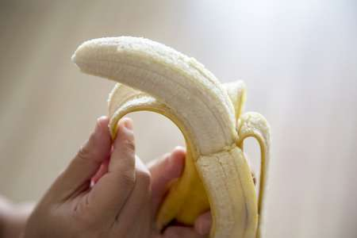

Tentangbuah.com

Pisang

Pisang adalah nama umum yang diberikan pada tumbuhan terna raksasa berdaun besar memanjang dari suku Musaceae.
Beberapa jenisnya (Musa acuminata, M. balbisiana, dan M. ×paradisiaca) menghasilkan buah konsumsi yang dinamakan sama.
Buah ini tersusun dalam tandan dengan kelompok-kelompok tersusun menjari yang disebut sisir
Hampir semua buah pisang memiliki kulit berwarna kuning ketika matang, meskipun ada beberapa yang berwarna jingga, merah, hijau, ungu, atau bahkan hampir hitam.
Buah pisang sebagai bahan pangan merupakan sumber energi (karbohidrat) dan mineral, terutama kalium.
Khasiat pisang
- baik bagi pencernaan
- Baik untuk menurunkan tekanan darah
- Menurunkan resiko stroke
- meningkatkan stamina
- sumber mangan yang baik
- mengandung serat tinggi
Daftar Harga
| Jenis pisang | harga | |
|---|---|---|
| Per kilo | Per biji | |
| pisang ulin | 50.000 | 5.000 |
| pisang cavendish | 60.000 | 6.000 |
| pisang raja | 70.000 | 7.000 |
| pisang ijo | 55.000 | 5.500 |